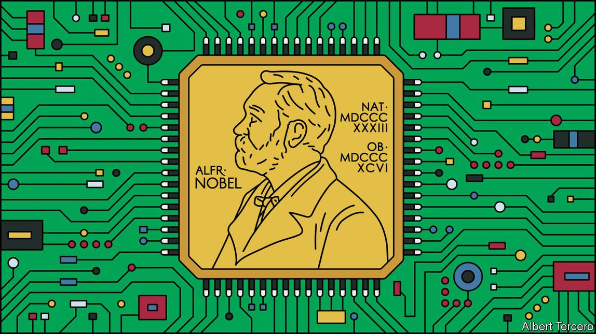

2021-07-29T11:11:17+00:00
Rage against the machine: December 2036
对机器的愤怒：2036 年 12 月
對機器的憤怒：2036 年 12 月
What if an AI won the Nobel prize for medicine?
如果人工智能获得诺贝尔医学奖会怎样？
如果人工智能獲得諾貝爾醫學獎會怎樣？
Controversy ensues when the greatest prize in medical research is awarded to a non-human. An imagined scenario from 2036
当医学研究的最高奖项被授予非人类时，争议随之而来。2036 年的想象场景【《畅想未来》系列之四】
當醫學研究的最高獎項被授予非人類時，爭議隨之而來。2036 年的想象場景【《暢想未來》系列之四】

IT WAS A scene that the Nobel committee had dearly hoped to avoid. As the recipients of this year’s prizes filed into the Stockholm Concert Hall to take their seats, dozens of protesters, including several former laureates, clashed with police in the streets outside. They had gathered to express their opposition to the unprecedented decision to award the Nobel prize in physiology or medicine to an artificial intelligence.
这是诺贝尔委员会非常希望避免的场景：当今年的获奖者鱼贯进入斯德哥尔摩音乐厅就座时，包括几位前诺奖得主在内的数十名抗议者在外面的街道上与警察发生冲突。他们聚集起来反对一项前所未有的决定——将诺贝尔生理学或医学奖授予人工智能。
這是諾貝爾委員會非常希望避免的場景：當今年的獲獎者魚貫進入斯德哥爾摩音樂廳就座時，包括幾位前諾獎得主在內的數十名抗議者在外面的街道上與警察發生衝突。他們聚集起來反對一項前所未有的決定——將諾貝爾生理學或醫學獎授予人工智能。
The committee’s citation recognised YULYA—the nickname of a machine-learning system officially known as System for Automated Lymphoma Diagnosis—as the discoverer of ancillary vulnerability, a mechanism whereby specific pairs of antibiotics, working in tandem, can prove effective against bacteria that are otherwise resistant. The committee estimates that in the 18 months since the discovery, which occurred when the death rate associated with the failure of existing antibiotics had risen to around 2.5m a year, YULYA’s work has saved around 4m lives, both through direct treatment of infections and by allowing the resumption of surgical procedures, including caesarean sections, that were considered too dangerous without antibiotics.
诺奖委员会的颁奖辞赞扬 “尤莉娅”（YULYA，一个正式名为“自动淋巴瘤诊断系统”的机器学习系统的昵称）是“附属脆弱性”的发现者。利用这种机制，特定的抗生素两两组合可以协同工作，消灭对其他手段都耐药的细菌。此前，与现有抗生素失效相关的死亡人数已达到每年 250万。据委员会估计，自发现该机制以来的 18 个月里，通过直接治疗感染，以及让包括剖腹产在内的那些没有抗生素会过于危险的外科手术得以恢复，“尤莉娅”的工作已经挽救了大约 400 万人的生命。
諾獎委員會的頒獎辭讚揚 “尤莉婭”（YULYA，一個正式名為“自動淋巴瘤診斷系統”的機器學習系統的昵稱）是“附屬脆弱性”的發現者。利用這種機制，特定的抗生素兩兩組合可以協同工作，消滅對其他手段都耐葯的細菌。此前，與現有抗生素失效相關的死亡人數已達到每年 250萬。據委員會估計，自發現該機制以來的 18 個月里，通過直接治療感染，以及讓包括剖腹產在內的那些沒有抗生素會過於危險的外科手術得以恢復，“尤莉婭”的工作已經挽救了大約 400 萬人的生命。
Bringing to an end the greatest global public-health crisis since the coronavirus pandemic of 2020-22 would, you might have thought, be considered qualification enough for anyone, whether human or machine, to win the Nobel prize. But the decision has proved hugely controversial. Though the statutes of the Nobel Foundation have historically been interpreted as implying that only a human can win the award, another of its dictates was deemed to take precedence: recognition for having “conferred the greatest benefit to humankind” in the preceding year. Another factor behind the break with tradition was a demographic shift in the prize committee. When two of the committee’s five members succumbed to bacterial infections last year, younger replacements were elected, both of whom happened to have used machine-learning systems in their doctoral research.
你可能会想，结束自 2020-22 年的新冠疫情以来最严重的全球公共卫生危机足以让任何个体（无论是人类还是机器）拥有获得诺贝尔奖的资格。但事实证明，这一决定引起了极大的争议。尽管诺贝尔基金会的章程历来被解读为暗示只有人类才能获奖，但另一条规定似乎更为重要：表彰在前一年“为人类带来了最大利益”的项目。打破传统背后的另一个因素是诺奖委员会的人口结构变化。去年，当委员会的五名成员中有两名死于细菌感染时，新当选的评委更年轻，而这两人碰巧都在自己的博士研究中使用了机器学习系统。
你可能會想，結束自 2020-22 年的新冠疫情以來最嚴重的全球公共衛生危機足以讓任何個體（無論是人類還是機器）擁有獲得諾貝爾獎的資格。但事實證明，這一決定引起了極大的爭議。儘管諾貝爾基金會的章程歷來被解讀為暗示只有人類才能獲獎，但另一條規定似乎更為重要：表彰在前一年“為人類帶來了最大利益”的項目。打破傳統背後的另一個因素是諾獎委員會的人口結構變化。去年，當委員會的五名成員中有兩名死於細菌感染時，新當選的評委更年輕，而這兩人碰巧都在自己的博士研究中使用了機器學習系統。
YULYA was originally built to tackle a different problem: finding more effective cancer treatments. One of the world’s most advanced causal nets, it is one of a new generation of artificial-intelligence systems combining the pattern-recognition skills of conventional “deep” neural networks with the ability to distinguish causation from mere correlation. By examining records from patient databases, in conjunction with a corpus of papers from medical journals and historical data from pharmaceutical companies, it sought to identify the patterns of symptoms that led to the most severe outcomes, in order to diagnose them earlier. It was also programmed to evaluate the effectiveness of different treatments, including combinations of treatments, in order to suggest new therapeutic regimens that could be tested in patients.
打造“尤莉娅”最初是为了解决另一个问题：寻找更有效的癌症治疗方法。作为世界上最先进的因果网络之一，它是新一代人工智能系统，把传统“深度”神经网络的模式识别技能与区分因果关系和单纯相关性的能力结合起来。通过检查患者数据库中的记录，结合医学期刊论文集和制药公司的历史数据，它试图确定导致最严重结果的症状模式以便及早确诊。它还被用于评估不同疗法（包括组合疗法）的有效性，以便提出可以在患者身上进行检验的新治疗方案。
打造“尤莉婭”最初是為了解決另一個問題：尋找更有效的癌症治療方法。作為世界上最先進的因果網絡之一，它是新一代人工智能系統，把傳統“深度”神經網絡的模式識別技能與區分因果關係和單純相關性的能力結合起來。通過檢查患者數據庫中的記錄，結合醫學期刊論文集和製藥公司的歷史數據，它試圖確定導致最嚴重結果的癥狀模式以便及早確診。它還被用於評估不同療法（包括組合療法）的有效性，以便提出可以在患者身上進行檢驗的新治療方案。
Its focus shifted, however, when a software upgrade in 2034 accidentally gave it access to all recent papers in medical journals, rather than just those associated with cancer. YULYA duly began to crunch data relating to antimicrobial resistance, which accounted for a steadily growing proportion of medical-research papers as the crisis intensified. At first, its requests for more data in specific areas, and suggestions for new approaches to treatment, were thought to be errors, because they did not relate to cancer. Then YULYA’s operators realised what had happened, and saw that it had used its reasoning capabilities to build a testable hypothesis: the forerunner of what would become ancillary vulnerability. It highlighted the data that would be needed to validate the hypothesis, including specific guidelines as to how it should be collected. “It amounted to a full-scale programme of research,” says Anisha Rai, one of YULYA’s creators.
然而，当 2034 年一次软件升级意外使其能够访问医学期刊上的所有最新论文，而不仅仅是与癌症相关的论文后，它的研究重点发生了变化。“尤莉娅” 适时地开始处理与抗菌素耐药性相关的数据——随着危机的加剧，这些数据在医学研究论文中的比例稳步上升。起初，它对于在特定领域提供更多数据的要求以及对新疗法的建议都被认为出了错，因为它们与癌症无关。后来“尤莉娅”的操作员意识到发生了什么事，并发现它已经利用其推理能力建立了一个可检验的假设：这就是“附属脆弱性”的前身。它特别强调了验证假设所需的数据，包括关于如何收集这些数据的具体指导方针。“这算的上是一个全面的研究计划了。”“尤莉娅”的创造者之一阿尼莎·拉伊（Anisha Rai）说。
然而，當 2034 年一次軟件升級意外使其能夠訪問醫學期刊上的所有最新論文，而不僅僅是與癌症相關的論文後，它的研究重點發生了變化。“尤莉婭” 適時地開始處理與抗菌素耐藥性相關的數據——隨着危機的加劇，這些數據在醫學研究論文中的比例穩步上升。起初，它對於在特定領域提供更多數據的要求以及對新療法的建議都被認為出了錯，因為它們與癌症無關。後來“尤莉婭”的操作員意識到發生了什麼事，並發現它已經利用其推理能力建立了一個可檢驗的假設：這就是“附屬脆弱性”的前身。它特彆強調了驗證假設所需的數據，包括關於如何收集這些數據的具體指導方針。“這算的上是一個全面的研究計劃了。”“尤莉婭”的創造者之一阿尼莎·拉伊（Anisha Rai）說。
Under less exceptional circumstances, such trials might never have been authorised. Many funding bodies require scientists to lay bare the reasoning process of AI systems, in order to be sure that their recommendations do not lead to deadly conclusions. Dr Rai and her colleagues got funding for YULYA’s trial by playing down its role in suggesting the hypothesis. Only when the results showed promise did they publish YULYA’s original proposals.
如果不是情况如此特殊，这种试验可能永远不会被批准。许多资助机构要求科学家公开人工智能系统的推理过程，以确保它们的建议不会导致致命的结论。拉伊博士和同事们通过淡化“尤莉娅”在提出假设方面的作用来为“尤莉娅”的试验获得资助。只有当结果显示有希望时，他们才公布“尤莉娅”的原始提案。
如果不是情況如此特殊，這種試驗可能永遠不會被批准。許多資助機構要求科學家公開人工智能系統的推理過程，以確保它們的建議不會導致致命的結論。拉伊博士和同事們通過淡化“尤莉婭”在提出假設方面的作用來為“尤莉婭”的試驗獲得資助。只有當結果顯示有希望時，他們才公布“尤莉婭”的原始提案。
That, in turn, led to a heated debate about whether YULYA, or its creators, deserved credit for the breakthrough. Dr Rai continues to insist that YULYA deserves sole credit, a position that has prompted the departure of several members of her original team in the past year. She even refused to go to Stockholm to receive the award on YULYA’s behalf from the queen of Sweden. “It’s not my prize,” she says.
这反过来又引发了一场激烈的争论，即这一突破是应该归功于“尤莉娅”还是它的创造者。拉伊博士仍然坚持认为功劳应该全部归于“尤莉娅”，这一立场促使她原团队的几名成员在过去一年中离职。她甚至拒绝去斯德哥尔摩代表“尤莉娅”接受瑞典女王颁发的奖项。“这个奖不属于我。”她说。
這反過來又引發了一場激烈的爭論，即這一突破是應該歸功於“尤莉婭”還是它的創造者。拉伊博士仍然堅持認為功勞應該全部歸於“尤莉婭”，這一立場促使她原團隊的幾名成員在過去一年中離職。她甚至拒絕去斯德哥爾摩代表“尤莉婭”接受瑞典女王頒發的獎項。“這個獎不屬於我。”她說。
AIs are commonly used to predict the onset of diseases like Alzheimer’s, make personalised treatment recommendations and enhance the diagnostic abilities of physicians. And the use of AI in drug discovery, in particular to help pharmaceutical companies wade through databases, is not new. In 2020 an algorithm developed at the Massachusetts Institute of Technology made headlines when it identified a new antibiotic. Dubbed halicin, after the computer in the film “2001: A Space Odyssey”, it proved to be effective against some resistant bacteria, but was limited in its scope. “Ancillary vulnerability makes halicin look like a homeopathic treatment, like a placebo,” says Una Científica, a researcher at the Houssay Institute in Buenos Aires.
人工智能被普遍用于预测阿尔茨海默氏症等疾病的发作，提出个性化的治疗建议并提高医生的诊断能力。在新药研发中使用人工智能，特别是帮助制药公司处理数据库，并不是什么新鲜事。2020 年，麻省理工学院开发的一种算法因为发现了一种新抗生素而上了头条。它以电影《2001：太空漫游》中的计算机HAL的名字被命名为“halicin”，已被证明对一些耐药细菌有效，但作用范围有限。布宜诺斯艾利斯的奥赛研究所（Houssay Institute）的研究员乌娜·西安蒂菲卡（Una Científica）说：“和附属脆弱性比起来，halicin 看起来就像一种顺势疗法，就像安慰剂一样。”
人工智能被普遍用於預測阿爾茨海默氏症等疾病的發作，提出個性化的治療建議並提高醫生的診斷能力。在新葯研發中使用人工智能，特別是幫助製藥公司處理數據庫，並不是什麼新鮮事。2020 年，麻省理工學院開發的一種算法因為發現了一種新抗生素而上了頭條。它以電影《2001：太空漫遊》中的計算機HAL的名字被命名為“halicin”，已被證明對一些耐葯細菌有效，但作用範圍有限。布宜諾斯艾利斯的奧賽研究所（Houssay Institute）的研究員烏娜·西安蒂菲卡（Una Científica）說：“和附屬脆弱性比起來，halicin 看起來就像一種順勢療法，就像安慰劑一樣。”
Even so, the Nobel committee’s reference to YULYA’s “discovery” has angered those who see it as little more than a clever tool. “YULYA is an AI capable of winning a Nobel. That is not the same thing as an AI that’s capable of discovery,” says Hars Kritik of the European Robotics Institute in Prague. He argues that even the best AIs are only useful in specialised areas like drug design, where large quantities of data are married to well-defined metrics of success. Saying that they can make discoveries, he says, waving a placard outside the concert hall, is “flawed anthropomorphism”.
即便如此，对于诺贝尔委员会的颁奖辞提到“尤莉娅”的“发现”，一些人大为光火，他们认为它只不过是一件聪明的工具。“‘尤莉娅’是有能力赢得诺贝尔奖的人工智能。但这不等于说人工智能有能力做出发现。”布拉格欧洲机器人研究所的哈斯·克里提克（Hars Kritik）说。他认为，即使是最好的人工智能也只在药物设计等专门领域有用——在这些领域中都有大量数据与定义明确的成功指标。他在音乐厅外挥舞着标语牌说道，说这些机器可以有所发现是“错误的拟人化”。
即便如此，對於諾貝爾委員會的頒獎辭提到“尤莉婭”的“發現”，一些人大為光火，他們認為它只不過是一件聰明的工具。“‘尤莉婭’是有能力贏得諾貝爾獎的人工智能。但這不等於說人工智能有能力做出發現。”布拉格歐洲機器人研究所的哈斯·克里提克（Hars Kritik）說。他認為，即使是最好的人工智能也只在藥物設計等專門領域有用——在這些領域中都有大量數據與定義明確的成功指標。他在音樂廳外揮舞着標語牌說道，說這些機器可以有所發現是“錯誤的擬人化”。
Rightly or wrongly, YULYA is unlikely to be the last artificial intelligence to win a Nobel prize. Sources within the Nobel Foundation say that similar nominations have been received for prizes in physics and chemistry, as AI systems are used to search for new materials and chemical compounds suitable for use in batteries, solar panels and carbon-capture membranes. Given the chaos that erupted in Stockholm this week, however, the chances of an AI winning the Nobel peace prize seem rather more remote. ■
不管对错，”尤莉娅” 不太可能是最后一个获得诺贝尔奖的人工智能。诺贝尔基金会内部消息人士称，由于人工智能系统被用于寻找适用于电池、太阳能电池板和碳捕获膜的新材料和化合物，物理和化学奖项也有了类似的提名。然而，鉴于本周在斯德哥尔摩爆发的混乱，人工智能获得诺贝尔和平奖的机会似乎更加渺茫。
不管對錯，”尤莉婭” 不太可能是最後一個獲得諾貝爾獎的人工智能。諾貝爾基金會內部消息人士稱，由於人工智能系統被用於尋找適用於電池、太陽能電池板和碳捕獲膜的新材料和化合物，物理和化學獎項也有了類似的提名。然而，鑒於本周在斯德哥爾摩爆發的混亂，人工智能獲得諾貝爾和平獎的機會似乎更加渺茫。